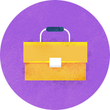
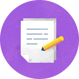

-
A centre of expertise and a service infrastructure to provide support across the full range of issues related to CSR and global sustainable development.
-
More than 30 CSR projects implemented for major corporate customers, representing different segments of the economy (including reports, prepared in accordance with the world’s leading standard GRI).
-
Regular surveys to access the status of CSR reporting in Russia, dominant trends, and prospects of corporate practices development.
-
Publications in the leading media focused on expert assessments and the results of EmCo research.
-
Expert work in collaboration with the GRI, aimed at improving CSR mechanisms, promotion of sustainable development ideas.